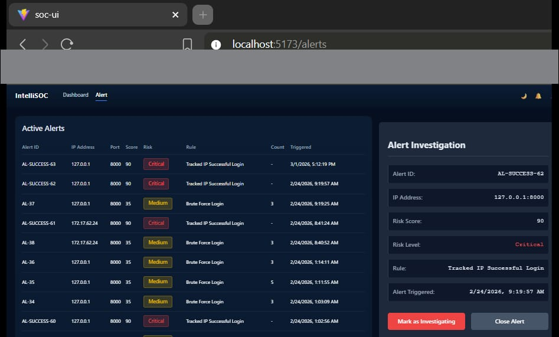
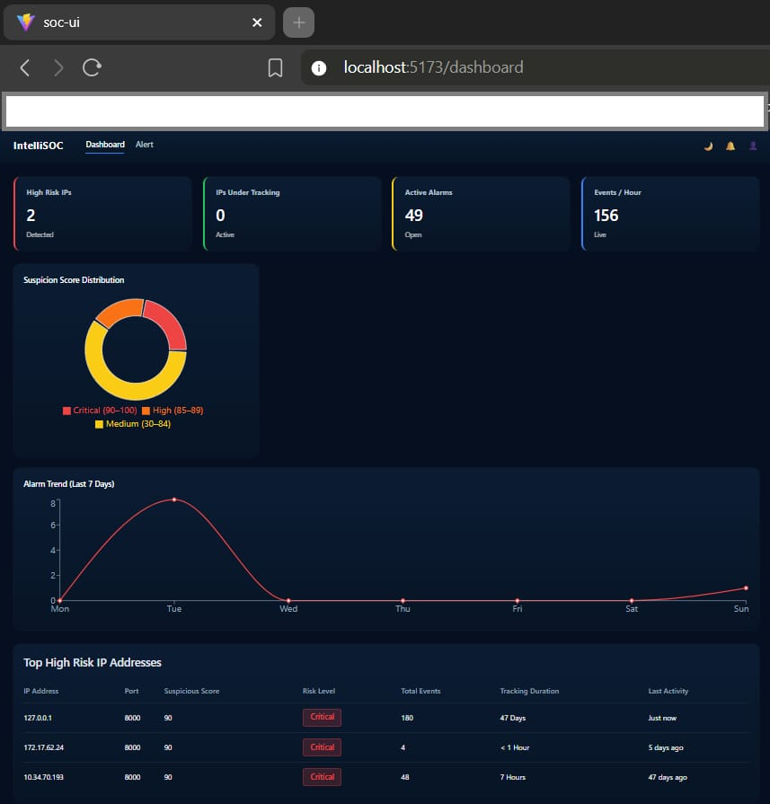

🏢
Enterprise-Heavy Solutions
Existing platforms are built for large-scale deployments with high-cost infrastructure, making them less accessible to smaller organizations.
Long-Term AI-Driven Threat Detection
IntelliSOC is a lightweight, standalone SOC dashboard designed to detect low-and-slow cyber threats that evolve across weeks or months. Unlike traditional short-term alert systems, it maintains long-term behavioural memory for IP entities and applies machine learning-based anomaly detection to generate adaptive suspicion scores.
By combining temporal profiling with explainable AI-driven risk scoring, the system enables analysts to detect stealthy multi-stage attacks that traditional short-window tools often miss.
Active Alerts
| Alert ID | IP Address | Port | Score | Risk | Triggered |
|---|---|---|---|---|---|
| AL-SUCCESS-63 | 127.0.0.1 | 8000 | 90 | Critical | 3/1/2026 5:12 PM |
| AL-37 | 127.0.0.1 | 8000 | 85 | Medium | 2/24/2026 9:19 AM |
| AL-SUCCESS-61 | 172.17.62.24 | 8000 | 90 | Critical | 2/24/2026 8:41 AM |
Suspicion Score Distribution
AI-Driven Long-Term IP Behaviour Intelligence for Modern SOC Environments
This final-year research project introduces a lightweight, standalone SOC dashboard designed to detect low-and-slow cyber threats that evolve across weeks or months. Unlike traditional short-term alert systems, the platform maintains long-term behavioural memory for IP entities and applies machine learning-based anomaly detection to generate adaptive suspicion scores. By combining temporal profiling with explainable risk analysis, the system enhances early threat detection while remaining accessible and research-focused.


Modern SIEM and UEBA platforms such as Splunk, Microsoft Sentinel, and IBM QRadar provide powerful real-time detection capabilities. However, these enterprise-grade systems are primarily optimized for short-to-medium-term threat identification, leaving a critical gap in extended tracking of individual users or IP addresses over weeks or months.
🏢
Existing platforms are built for large-scale deployments with high-cost infrastructure, making them less accessible to smaller organizations.
⏳
Most systems prioritize immediate alerts and event correlation rather than initiating dedicated long-term monitoring after a suspicious trigger.
🔍
Broad analytics often overlook subtle behavioural drifts across extended timelines, allowing stealthy campaigns to evolve undetected.
There is a clear need for a lightweight, standalone SOC dashboard capable of initiating extended tracking of a specific user or IP immediately after suspicious activity is detected. By integrating AI-driven adaptive risk scoring and machine learning-based anomaly detection, such a system can bridge the gap between costly enterprise SOC platforms and the absence of affordable, long-duration behavioural monitoring solutions.
Technical implementation and system architecture
📂
Windows security logs are collected using an open-source agent, normalized, enriched, and stored in a structured time-series database for long-term analysis.
🧠
Temporal behavioural features (7–90 day windows) are extracted and processed using Isolation Forest and One-Class SVM models to generate adaptive suspicion scores.
📊
A standalone SOC dashboard displays IP timelines, risk levels, and explainable anomaly factors for efficient investigation and alert management.
01
Log Ingestion02
Feature Engineering03
ML-Based Scoring04
Dashboard Development05
Evaluation & ValidationFuture work could expand the system to support the ingestion and analysis of Linux-based and cloud-generated logs, thereby broadening the scope of monitored environments. Additionally, incorporating richer data enrichment sources could improve the contextual understanding of network events. Advanced explainability techniques, such as SHAP (SHapley Additive exPlanations) or LIME (Local Interpretable Model-agnostic Explanations), may also be integrated to enhance transparency and build greater trust for analysts interpreting anomaly scores and alerts.
Network Technology
ICT/21/909
skwsampath@gmail.com
Software Technology
ICT/21/911
sameerahsamuil@gmail.com
Software Technology
ICT/21/814
sidhdhikabanu01@gmail.com
Senior Lecturer
chamara.lelamalage@gmail.com
Lecturer
chamilakarunatilake@sjp.ac.lk